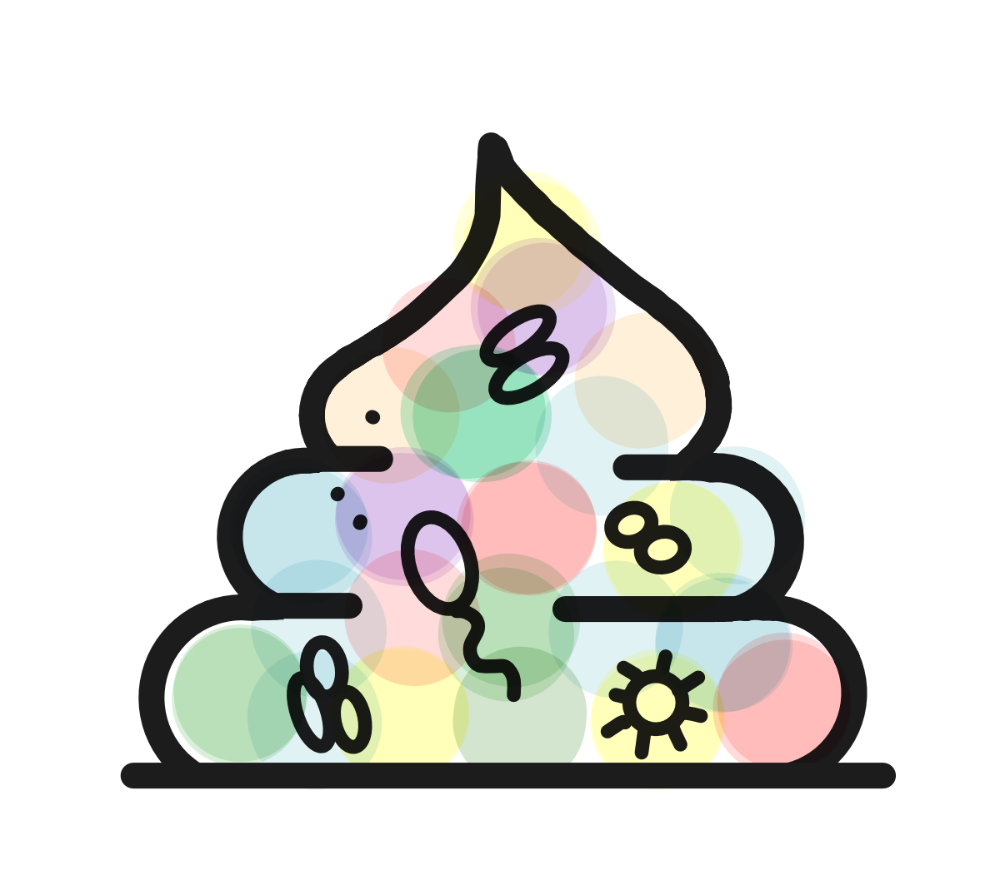
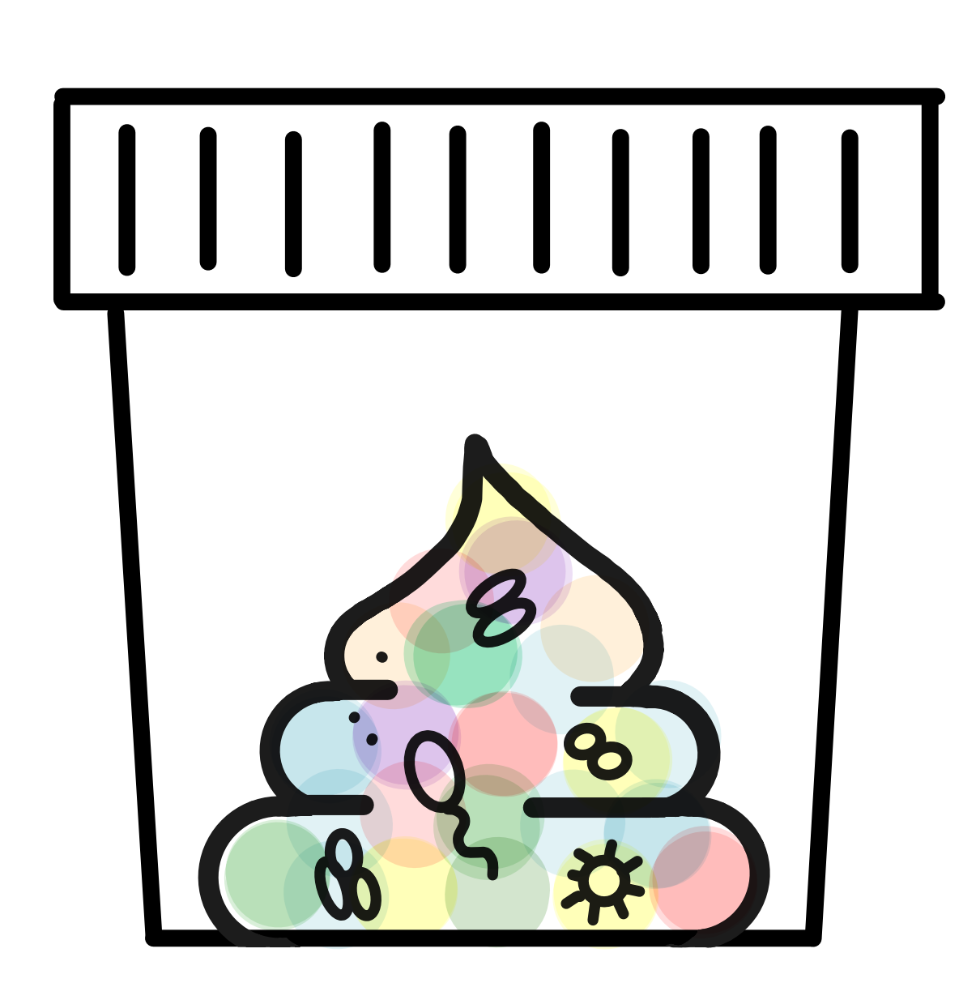

The Colorful Poo Collection
During my PhD, I was sometimes a little envious of my colleagues in environemntal microbiome research. They sampled at incredible natural places and came back with beautiful photos to show in presentations. My samples came from the human gut. When it was time to show pictures, I had… poo to show.
And poo is almost always drawn brown. But as a microbiologist, I see it differently: a stool sample is home to trillions of microbes from hundreds of species. When we show microbial communities in our figures, we use every color we can find. So why not the poo itself?
That is how the colorful poo came about. Since then, I have received so much lovely feedback on it that I decided to make the drawings freely available. Use them in your talks, posters, teaching, and papers. I would love to see where they end up!




License
These illustrations are licensed under CC BY-NC 4.0. You may share and adapt them for non-commercial purposes, as long as you give credit.
Additional permission for scientific publications: you may also use the illustrations, with credit, in scientific publications, including journal articles, preprints, theses, book chapters, posters and conference presentations, even when the work is published by a commercial publisher or under an open-access license such as CC BY.
All other commercial use requires my permission. Please get in touch.
Please credit as
"Colorful Poo" illustration by Marisa Isabell Keller, CC BY-NC 4.0, marisaisabell.github.io